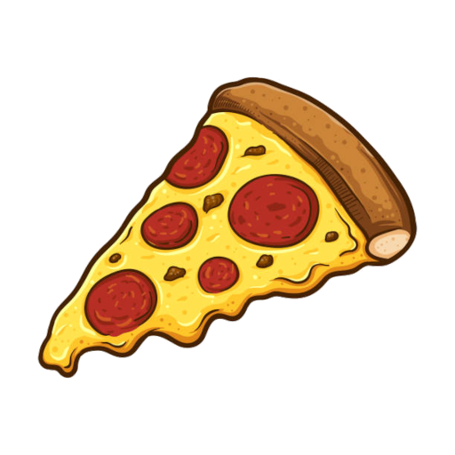

PizzaCalc
Mão na massa
Manter tela ligada
PT
EN
Pizza Napolitana — Venturelli 95/5 • Hidratação 67% • Poolish
Ajuste a produção
Número de discos
:
6
discos
Peso por panetto
:
280
g
g
Hidratação
:
67
%
%
Massa total
:
1680 g
Farinha total
:
1000 g
Hidratação
:
67%
Sal
:
2,5%
Ajustar fermento pela temperatura ambiente
Perfis salvos
Salvar perfil
Excluir
Receita padrão (6 × 280g · 67%)
Imprimir receita
Imprimir tudo
Receita
Preparo
Cronograma
Diário
Referência
Expandir tudo
Ingredientes
Ingrediente
%
Quantidade
Divisão por etapa
Molho — The Ultimate Sauce
Ingrediente
Quantidade
Passo a passo
Lista de compras
Imprimir lista
Custo por pizza
Salvar preços
Restaurar preços padrão
Temperatura da água — Halo Core
Ambiente
°C
Farinha
°C
Poolish
°C
Massa
°C
Atrito da masseira
:
36
°C
Restaurar padrão
Guia de mistura — Halo Core
Guia de cocção — Fornetto Slim
Pré-aquecimento
390°C · 40 min
40:00
Cocção
90–140 s
00:00
Diário de fornadas
Registrar fornada
Exportar / compartilhar
Importar
Insights
Cronograma passo a passo
Carregar cronograma padrão
Imprimir cronograma
Limpar marcações
Início do poolish:
Hora de assar:
Duração do appretto
:
4,0
h
Farinhas
Marca / nome
Tipo
W
Proteína
Adicionar farinha
Tabela de velocidades — Halo Core
Imprimir tabela
Vel.
Potência
RPM
Uso / equivalente industrial
Glossário napolitano
Imprimir glossário
Solução de problemas
×
◀
Anterior
Próximo
▶
×
‹
›